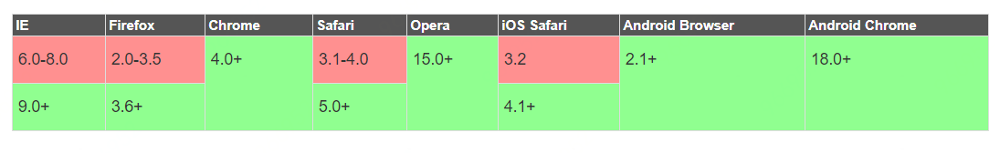

## 移动端 Web 页面适配方案 移动端 Web 页面，即常说的 H5 页面、手机页面、webview 页面等。 手机机设备屏幕尺寸不一，做移动端的 Web 页面，需要考虑在安卓/IOS 的各种尺寸设备上的兼容，这里总结的是针对移动端设备的页面，设计与前端实现怎样做能更好地适配不同屏幕宽度的移动设备。 **适配的目标** > 在不同尺寸的手机设备上，页面“相对性的达到合理的展示（自适应）”或者“保持统一效果的等比缩放（看起来差不多）”。 --- <!-- markdown-to-slides index.md -o index.html -s slide.css --> ## I. 概念的理解 要搞懂移动端的适配问题，就要先搞明白像素和视口。 ### 像素 在移动端给一个元素设置 width:200px 时发生了什么？这里的 px 到底是多长呢？像素是网页布局的基础，但是我们一直在用直觉使用它。 iphone6 有 750 的物理像素，但是屏幕宽度像素是 375px？？？ **1.设备像素 device pixel** 设备像素是物理概念，指的是设备中使用的物理像素，任何设备屏幕的物理像素的数量都是固定不变的。 比如 iphone6 的分辨率 1334 x 750px ，750px 指的是设备物理像素 **2.逻辑像素 css pixel** css 像素是 web 编程的概念，指的是 css 样式中使用的逻辑像素 css px 是一个相对单位 相对的是设备像素 --- 我们网页 css 和小程序用的是逻辑像素 **eg：** iphone6 使用的是 retina 视网膜屏幕 2px x 2px 的设备像素代表 1px z 1px 的 css 像素 所以设备像素 1334 x 750 css 逻辑像素是 667 x 375 那么，我们现在再来说说一个元素 width:200px 以后会怎么样。这个元素跨越了 200 个 CSS 元素，200 个 CSS 元素相当于多少个设备像素取决于两个条件： - 页面是否缩放 - 屏幕是否为高密度 这两方面后面再解释，先梳理一下手机硬件之间的关系，注意这里使用的都是物理像素。 以 iPhone5 为例，我们已知的是： **1.分辨率** 1136pt x 640pt 指屏幕上垂直有 1136 个物理像素，水平有 640 个物理像素 --- **2.屏幕尺寸** 4 英寸 注意英寸是长度单位，不是面积单位。4 英寸指的是屏幕对角线的长度。 **3.屏幕像素密度** 326ppi 屏幕像素密度（Pibel Per Inch）简称 ppi ，单位是 dpi（dot per inch）。这里指屏幕水平或垂直每英寸有 326 个物理像素。原则上来说，ppi 越高越好，因为图像会更加细腻清晰。 ppi 是可以通过 分辨率 和 屏幕尺寸 计算得到的： <img src="./ppi.png"/> [这个网站](https://www.sven.de/dpi/)列出了很多设备的分辨率和屏幕尺寸，并且计算了 ppi。 --- ### 视口 桌面浏览器中，浏览器窗口就是约束你的 CSS 布局视口（又称初始包含块）。它使所有 CSS 百分比宽度推算的根源，它的作用是 CSS 布局限制了一个最大宽度，视口的宽度和浏览器窗口宽度一致。 但是在移动端，情况就很复杂了。 #### 布局视口 layout viewport 在手机上，视口与移动端浏览器屏幕宽度不再相关联，是完全独立的，这个浏览器厂商定的视口被称为布局视口。 布局视口我们是看不见的，只知道网页的最大宽度是 980px ，并且被缩放在了屏幕内。 可以这样设置布局视口的宽度： ```html <meta name="viewport" content="width=640" /> ``` **媒体查询与布局视口** ```css @media (min-width: 700px) { ...; } ``` --- document.documentElement.clientWidth/Height 返回布局视口的尺寸 #### 视觉视口 visual viewport 有了 layout viewport，我们还需要一个视口用来承载它，这个视口可以简单的认为是手持设备物理屏幕的可视区域， 视觉视口是用户正在看到的网页的区域，大小是屏幕中 CSS 像素的数量。 window.innerWidth/Height 返回视觉视口的尺寸 很明显，visual viewport 的尺寸不会是一个固定的值，甚至每款设备都可能不同。大致列几种常见设备的 visual viewport 尺寸： - iPhone4~iPhone5S: 320\*480px - iPhone6~iPhone6S: 375\*627px - iPhone6 Plus~iPhone6S Plus: 414\*736px 以 iPhone4S 为例，会在其 320px② 的 visual viewport 上，创建一个宽 980px 的 layout viewport，于是用户可以在 visual viewport 中拖动或者缩放网页，来获得良好的浏览效果；布局视口用来配合 CSS 渲染布局，当我们定义一个容器的宽度为 100%时，这个容器的实际宽度是 980px 而不是 320px，通过这种方式大部分网页就能以缩放的形式正常显示在手机屏幕上了。 --- #### 理想视口（完美视口） ideal viewport 布局视口明显对用户是不友好的，完全忽略了手机本身的尺寸。所以苹果引入了理想视口的概念，它是对设备来说最理想的布局视口尺寸。理想视口中的网页用户最理想的宽度，用户进入页面的时候不需要缩放。 ```html <meta name="viewport" content="width=device-width" /> ``` > 定义理想视口是浏览器的事情，并不能简单地认为是开发者定义的，开发者只能使用。 screen.width/height 返回理想视口的尺寸，有严重的兼容性问题---可能返回两种值： - 理想视口的尺寸（下载浏览器） - 屏幕的设备像素尺寸（内置浏览器） Screen size tests 和 Understanding viewport 可以测试你的设备的 screen.width 值，同一设备的不同浏览器返回的值可能是不一样的。这一情况主要发生在默认浏览器和下载浏览器（如 UC、Chrome）之间。 关于 3 个视口，[PPK](https://www.quirksmode.org/)已经做了非常棒的阐释，你也可以在 StackOverflow 上找到一些对此描述的相互补充，例如：[1](https://stackoverflow.com/questions/6333927/difference-between-visual-viewport-and-layout-viewport), [2](https://stackoverflow.com/questions/7344886/visual-viewport-vs-layout-viewport-on-mobile-devices)，有兴趣的童鞋也可以看看 --- ### 缩放 缩放是在放大或缩小 CSS 像素，比如一个宽度为 200px 的元素无论放大，还是 200 个 CSS 像素。但是因为这些像素被放大了，所以 CSS 像素也就跨越了更多的设备像素。缩小则相反。 #### 缩放与视口 **缩放会影响视觉视口的尺寸** 页面被用户放大，视觉视口内 CSS 像素数量减少；被用户缩小，视觉视口内 CSS 像素数量增多就行了。这个道理应该是不难想的。 **用户缩放不会影响布局视口** 在下载浏览器中，可以这么算（理想视口与视觉视口的比）： ```html zoom level = screen.width / window.innerWidth ``` **禁止缩放** ```html <meta name="viewport" content="user-scalable=no" /> ``` --- **设置缩放** ```html <meta name="viewport" content="initial-scale=2" /> ``` 使用 initial-scale 有一个副作用：同时也会将布局视口的尺寸设置为缩放后的尺寸。所以 initial-scale=1 与 width=device-width 的效果是一样的。 ### 完美视口 解决各种浏览器兼容问题的理想视口设置 ```html <meta name="viewport" content="width=device-width,initial-scale=1" /> ``` ### 设备像素比 屏幕是否为高密度也会影响设备像素和 CSS 像素的关系。 在缩放程度为 100%（这个条件很重要，在后面会说到）时，他们的比例叫做设备像素比(device pixel ratio)： --- ```html dpr = 设备像素 / CSS 像素 ``` 可以通过 JS 得到： window.devicePixelRatio 设备像素比也和视口有关： ```html dpr = 屏幕横向设备像素 / 理想视口的宽 ``` --- ### viewport 特性 | Name | Value | description | | ------------- | ---------------------- | ----------------------------------------------------- | | width | 正整数或 device-width | 定义视口的宽度，单位为像素 | | height | 正整数或 device-height | 定义视口的高度，单位为像素 | | initial-scale | [0.0-10.0] | 定义初始缩放值 | | minimum-scale | [0.0-10.0] | 定义缩小最小比例，它必须小于或等于 maximum-scale 设置 | | maximum-scale | [0.0-10.0] | 定义放大最大比例，它必须大于或等于 minimum-scale 设置 | | user-scalable | yes/no | 定义是否允许用户手动缩放页面，默认值 yes | #### width width 被用来定义 layout viewport 的宽度，如果不指定该属性（或者移除 viewport meta 标签），则 layout viewport 宽度为厂商默认值。 --- #### initial-scale 如果想页面默认以某个比例放大或者缩小然后呈现给用户，那么可以通过定义 initial-scale 来完成。 ```html <meta name="viewport" content="initial-scale=2" /> ``` 那么用户将会看到 2 倍大小的页面内容。 #### maximum-scale 在移动端，你可能会考虑用户浏览不便，然后给予用户放大页面的权利，但同时又希望是在一定范围内的放大，这时就可以使用 maximum-scale 来进行约束。 ```html <meta name="viewport" content="initial-scale=1,maximum-scale=5" /> ``` 假设页面的默认缩放值 initial-scale 是 1，那么用户最终能够将页面放大到这个初始页面大小的 5 倍。 --- #### minimum-scale 类似 maximum-scale 的描述，不过 minimum-scale 是用来指定页面缩小比例的。 通常情况下，为了有更好地体验，不会定义该属性的值比 1 更小，因为那样页面将变得难以阅读。 #### user-scalable 如果你不想页面被放大或者缩小，通过定义 user-scalable 来约束用户是否可以通过手势对页面进行缩放即可。 ```html <meta name="viewport" content="user-scalable=no" /> ``` --- ## II. 移动端适配方案 - 使用百分比+媒体查询 - 使用 flexbox - 使用 rem + viewport - 使用 rem - 固定布局视口宽度，使用 viewport 进行缩放 --- ### rem 是什么 > 相对长度单位，相对于根元素(即 html 元素)font-size 计算值的倍数 **兼容性**  浏览器默认为 16px 可能造成 rem 计算上的麻烦和多位小数，所以，我们也可以使用 100px 初始化根元素： --- ### 使用百分比+媒体查询 meida queries 的方式可以说是我早期采用的布局方式，它主要是通过查询设备的宽度来执行不同的 css 代码，最终达到界面的配置。核心语法是： ```css @media screen and (max-width: 600px) { /*当屏幕尺寸小于600px时，应用下面的CSS样式*/ /*你的css代码*/ } ``` **优点** - media query 可以做到设备像素比的判断，方法简单，成本低，特别是对移动和 PC 维护同一套代码的时候。目前像 Bootstrap 等框- 架使用这种方式布局 - 图片便于修改，只需修改 css 文件 - 调整屏幕宽度的时候不用刷新页面即可响应式展示 **缺点** - 代码量比较大，维护不方便 - 为了兼顾大屏幕或高清设备，会造成其他设备资源浪费，特别是加载图片资源 - 为了兼顾移动端和 PC 端各自响应式的展示效果，难免会损失各自特有的交互方式 --- ### 以天猫首页为代表的 flex 弹性布局[表示怀疑] 它的 viewport 是固定的： ```html <meta name="viewport" content="width=device-width,initial-scale=1,maximum-scale=1,user-scalable=no" /> ``` 高度定死，宽度自适应，元素都采用 px 做单位。 随着屏幕宽度变化，页面也会跟着变化，效果就和 PC 页面的流体布局差不多，在哪个宽度需要调整的时候使用响应式布局调调就行（比如网易新闻），这样就实现了『适配』。 --- ### rem + viewport 缩放 这也是淘宝使用的方案，根据屏幕宽度设定 rem 值，需要适配的元素都使用 rem 为单位，不需要适配的元素还是使用 px 为单位。 **实现原理** 如 iphone6 plus 的 dpr 为 3, 则页面整体放大 3 倍, 1px(css 单位)在 plus 下默认为 3px(物理像素) 然后 viewport 设置为 1/3, 这样页面整体缩回原始大小. 从而实现高清。 这样整个网页在设备内显示时的页面宽度就会等于设备逻辑像素大小，也就是 device-width。 这个 device-width 的计算公式为：设备的物理分辨率/(devicePixelRatio \* scale)， 在 scale 为 1 的情况下，device-width = 设备的物理分辨率/devicePixelRatio 。 当设计以 iphone6 为标准，出 750px 的设计稿时，此时 dpr=2 ```javascript width = document.documentElement.clientWidth = 375px； rem = 375px / 7.5 = 50px; // font-size = 50px dpr = 2 时， 1rem = 100px, initial-scale=0.5, 缩放为0.5。 ``` --- ### rem 实现 根据不同屏幕动态写入 font-size，以 rem 作为宽度单位，固定布局视口。 ```html <meta name="viewport" content="width=device-width,initial-scale=1,maximum-scale=1,user-scalable=no" /> ``` 以 640px 设计稿和 750px 的视觉稿，网易这样处理的： ```javascript var width = document.documentElement.clientWidth // 屏幕的布局视口宽度 var rem = width / 7.5 // 750px设计稿将布局视口分为7.5份 var rem = width / 6.4 // 640px设计稿将布局视口分为6.4份 ``` 在 750px 设计稿上： ```javascript //在ipone6上： width = document.documentElement.clientWidth = 375px； rem = 375px / 7.5 = 50px; // font-size = 50px //在ipone5上： width = document.documentElement.clientWidth = 320px； rem = 320px / 7.5 = 42.667px; // font-size = 42.667px; ``` 百分比适配，没有 1px 适配，有字体大小适配。 --- 通过以下代码来控制 rem 基准值(设计稿以 720px 宽度量取实际尺寸) - [documentElement](https://developer.mozilla.org/zh-CN/docs/Web/API/Document/documentElement) - [devicePixelRatio](https://www.w3cschool.cn/fetch_api/fetch_api-atvq2nma.html) --- ```javascript !(function(d) { var c = d.document var a = c.documentElement var b = d.devicePixelRatio var f function e() { var h = a.getBoundingClientRect().width, g if (b === 1) { h = 720 } if (h > 720) h = 720 //设置基准值的极限值 g = h / 7.2 a.style.fontSize = g + 'px' } if (b > 2) { b = 3 } else { if (b > 1) { b = 2 } else { b = 1 } } a.setAttribute('data-dpr', b) d.addEventListener( 'resize', function() { clearTimeout(f) f = setTimeout(e, 200) }, false ) e() })(window) ``` --- ### 固定布局视口宽度，使用 viewport 进行缩放 如：荔枝 FM、网易应用 固定布局视口，宽度设置固定的值，总宽度为 640px，根据屏幕宽度动态生成 viewport。（设计稿应该是 640px 的） ```html <meta name="viewport" content="width=640, minimum-scale = 0.5625, maximum-scale = 0.5625, target-densitydpi=device-dpi" /> ``` 网页宽度始终为 640px。缩放比例 scale 为： **var scale = window.screen.width / 640** 百分比适配，部分 1px 适配，没有字体适配。 --- ### 微信新增尺寸单位 [rpx](https://developers.weixin.qq.com/miniprogram/dev/framework/view/wxss.html) 新增了尺寸单位。在写 CSS 样式时，开发者需要考虑到手机设备的屏幕会有不同的宽度和设备像素比，采用一些技巧来换算一些像素单位。WXSS 在底层支持新的尺寸单位 rpx ，开发者可以免去换算的烦恼，只要交给小程序底层来换算即可，由于换算采用的浮点数运算，所以运算结果会和预期结果有一点点偏差。 > rpx（responsive pixel）: 可以根据屏幕宽度进行自适应。规定屏幕宽为 750rpx。如在 iPhone6 上，屏幕宽度为 375px，共有 750 个物理像素，则 750rpx = 375px = 750 物理像素，1rpx = 0.5px = 1 物理像素。 | 设备 | 物理像素 | css 像素 | rpx->px | px->rpx | | -------- | -------- | -------- | -------------- | ------------- | | iPhone5 | 320px | 320px | 1rpx = 0.42px | 1px = 2.34rpx | | iPhone6 | 750px | 375px | 1rpx = 0.5px | 1px = 2rpx | | iPhone6+ | 1080px | 414px | 1rpx = 0.552px | 1px = 1.81rpx | 建议： 开发微信小程序时设计师可以用 iPhone6 作为视觉稿的标准。 --- ## III. 响应式和自适应 自适应是最早出现的，后面才有了响应式。响应式布局等于流动网格布局，而自适应布局等于使用固定分割点来进行布局。 **响应式的基本概念是（Responsive design）：** 简而言之，就是一个网站能够兼容多个终端——而不是为每个终端做一个特定的版本。 **自适应的解释（Adaptive design）：** 自适应布局给了你更多设计的空间，因为你只用考虑几种不同的状态。 如果用响应式布局来处理的话，用不同设备（电脑、平板、手机）去访问此页面，最后看到的布局和内容有很大不同。而如果用自适应布局去处理的话，那不管访问设备如何的不同（下图是三台尺寸不一样的手机），最后看到的页面内容和布局基本上还是一样的，就是尺寸略有不同。 --- **响应式** - [京东云官网](https://www.jdcloud.com/cn/) (栅格系统 + 媒体查询) pro-list-hd hidden-xs - [Microsoft](https://www.microsoft.com/zh-cn/) (栅格系统 + 媒体查询) col-6 pad-6x - [华为](/www.huaweicloud.com) (栅格系统 + 媒体查询 ) col-sm-4 col-pd-12 col-mb-12 **自适应** - [携程](https://www.ctrip.com/) - [淘宝](https://world.taobao.com/?spm=a21wu.241046-cn.7607074463.1.4a36b6cb14epyS&pos=1&acm=lb-zebra-243267-2087055.1003.1.1861105_0&scm=1003.1.lb-zebra-243267-2087055.OTHER_14955595025821_1861105) --- ### 实现响应式有哪几种方式? #### 1.使用媒体查询(Media Query) 结合 rem 字体 ```css // 如果大于1000px，就用：对应PC端页面 @media screen and (min-width: 1000px) { ...; } // 如果在小于1000px和大于768px之间： 对应平板端页面 @media screen and (max-width: 1000px) and (min-width: 768px) { ...; } // 如果小于768px： 对应手机端页面 @media screen and (max-width: 768px) { ...; } ``` #### 2.使用插件[bootstrap](https://v3.bootcss.com/css/#grid) 栅格化布局，本例利用 bootstarp 的栅格系统 --- --- --- #### 3.使用弹性布局(flex) [flex](http://www.runoob.com/w3cnote/flex-grammar.html) --- ## VI. 移动端适配总结 - 1 像素边框高清 - 高清图问题 --- ### 1 像素边框高清 在移动端 web 开发中，UI 设计稿中设置边框为 1 像素，前端在开发过程中如果出现 border:1px，测试会发现在某些机型上，1px 会比较粗，即是较经典的移动端 1px 像素问题。 - 项目中引入：border-1px.css，然后通过控制元素的 before 和 after 伪元素，改变 border 大小或颜色。 - 上面说到的淘宝的实现方式即 rem+viewport 缩放来实现。 ```css div { width: 1px; height: 100%; display: block; border-left: 1px solid #e5e5e5; -webkit-transform: scale(0.5); transform: scaleX(0.5); } ``` 缺点： 圆角无法实现，实现 4 条边框比较麻烦，并且只能单独实现，如果嵌套，会对包含的效果产生不想要的效果，所以此方案配合:after 和 before 独立使用较多。 --- - box-shadow 利用 CSS 对阴影处理的方式实现 0.5px 的效果 ```css -webkit-box-shadow: 0 1px 1px -1px rgba(0, 0, 0, 0.5); ``` 优点： 基本所有场景都能满足，包含圆角的 button，单条，多条线。 缺点： 颜色不好处理， 黑色 rgba(0,0,0,1) 最深的情况了。有阴影出现，不好用。 大量使用 box-shadow 可能会导致性能瓶颈。 四条边框实现效果不理想。 --- - 图片实现 使用 background-image 实现 1px 有两种方式: 渐变 linear-gradient 或直接使用图片(base64)。 渐变 linear-gradient (50%有颜色，50%透明) 单线条 ```css div { height: 1px; background-image: -webkit-linear-gradient(top, transparent 50%, #000 50%); background-position: top left; background-repeat: no-repeat; background-size: 100% 1px; } ``` 优点: 可以设置单条,多条边框 可以设置颜色 缺点: 大量使用渐变可能导致性能瓶颈 代码量大 多背景图片有兼容性问题 --- ### 高清图问题 **1. 使用 [srcset](https://www.cnblogs.com/flicat/p/4381089.html) 标签（WebKit 最新特性 srcset 简介）** ```html <img src="http://g.ald.alicdn.com/bao/uploaded/i1/TB1d6QqGpXXXXbKXXXXXXXXXXXX_!!0-item_pic.jpg_160x160q90.jpg" srcset=" http://img01.taobaocdn.com/imgextra/i1/803091114/TB2XhAPaVXXXXXmXXXXXXXXXXXX_!!803091114.jpg 2x, http://gtms04.alicdn.com/tps/i4/TB1wDjWGXXXXXbtXVXX6Cwu2XXX-398-510.jpg_q75.jpg 3x " /> ``` **2. 使用 js 自带的 Image 异步加载图片** ```html <img id="img" data-src1x="xxx@1x.jpg" data-src2x="xxx@2x.jpg" data-src3x="xxx@3x.jpg" /> ``` --- ```javascript var dpr = window.devicePixelRatio if (dpr > 3) { dpr = 3 } var imgSrc = $('#img').data('src' + dpr + 'x') var img = new Image() img.src = imgSrc img.onload = function(imgObj) { $('#img') .remove() .prepend(imgObj) //替换img对象 } ``` **3. 背景图片高清解决方法（对于 dpr=2，1 个 css 像素对应 4 个物理像素）** 对于 dpr=1，物理像素和 css 相同，图片高清。但对于 dpr=2，导致每个像素点实际上有 4 倍的普通像素点，反过来说，一个 CSS 像素点实际分成了四个，这样就造成了颜色只能近似选取，于是，我们看上去就变得模糊了。所以使用 2x 的图片就刚刚好。 --- 使用 media 来处理 ```css /* 普通显示屏(设备像素比例小于等于1)使用1倍的图 */ .css { background-image: url(img_1x.png); } /* 高清显示屏(设备像素比例大于等于2)使用2倍图 */ @media only screen and (-webkit-min-device-pixel-ratio: 2) { .css { background-image: url(img_2x.png); } } ``` 使用 [image-set]() 来处理 https://www.html.cn/book/css/values/image/image-set().htm ```css .css { background-image: url(1x.png); /*不支持image-set的情况下显示*/ background: -webkit-image-set( url(1x.png) 1x, /* 支持image-set的浏览器的[普通屏幕]下 */ url(2x.png) 2x, /* 支持image-set的浏览器的[2倍Retina屏幕] */ url(3x.png) 3x /* 支持image-set的浏览器的[3倍Retina屏幕] */ ); } ``` --- ## IV. 总结 1. [移动端 Web 页面适配方案](https://segmentfault.com/a/1190000008767416) 2. [移动端适配方案(上)](https://segmentfault.com/a/1190000004336869) 3. [移动前端开发之 viewport 的深入理解](http://www.cnblogs.com/2050/p/3877280.html) 4. [深入了解 viewport 和 px](https://tgideas.qq.com/webplat/info/news_version3/804/7104/7106/m5723/201509/376281.shtml) 5. [MobileWeb 适配总结](http://html-js.com/article/MobileWeb) 6. [移动端适配方案(下)](https://segmentfault.com/a/1190000004358316) 7. [移动端 H5 页面高清多屏适配方案](http://mobile.51cto.com/web-484304.htm) 8. [移动前端第一弹：viewport 详解](https://www.cnblogs.com/miragele/p/5449218.html) 9. [前端移动端适配总结](https://juejin.im/entry/59e70320f265da431c6f6514) 10. [移动前端自适应适配布局解决方案](https://www.cnblogs.com/Charliexie/p/6900640.html) 11. [移动端页面适配———多方案解析](https://www.jianshu.com/p/3b45aa981e77) 12. [移动端适配之 REM](https://www.cnblogs.com/exhuasted/p/6508716.html) 13. [移动端前端适配方案](https://blog.csdn.net/chenjuan1993/article/details/81710022) 14. [移动端适配方案一 弹性布局](https://blog.csdn.net/tcf_jingfeng/article/details/80803083) 15. [移动端适配方案](https://blog.csdn.net/yshenhua/article/details/81036372) 16. [移动端 1 像素边框问题的解决方案](https://www.cnblogs.com/cckui/p/9267534.html) 17. [移动端适配问题](https://www.cnblogs.com/luguiqing/p/7910686.html) <center>-- End --</center>